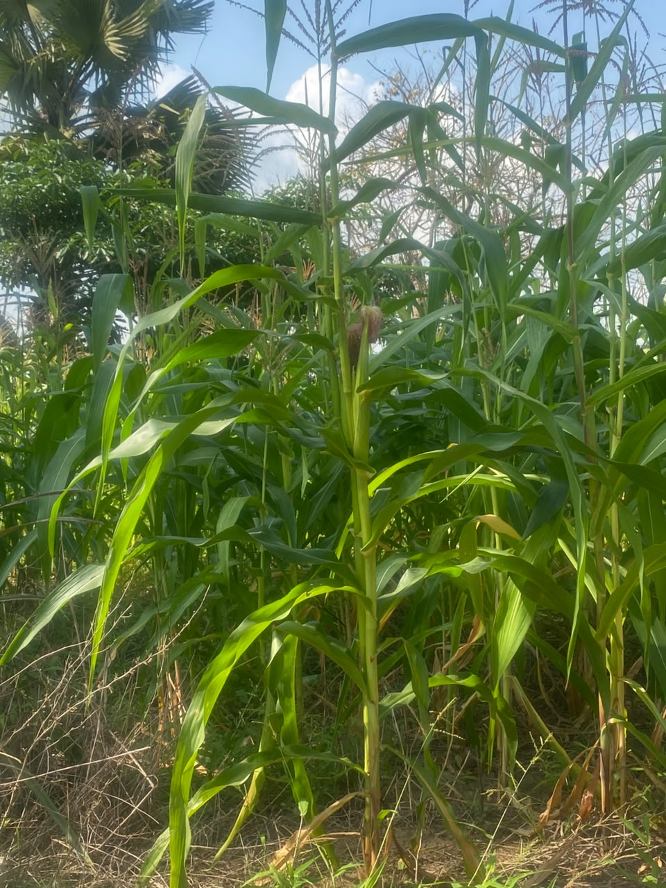
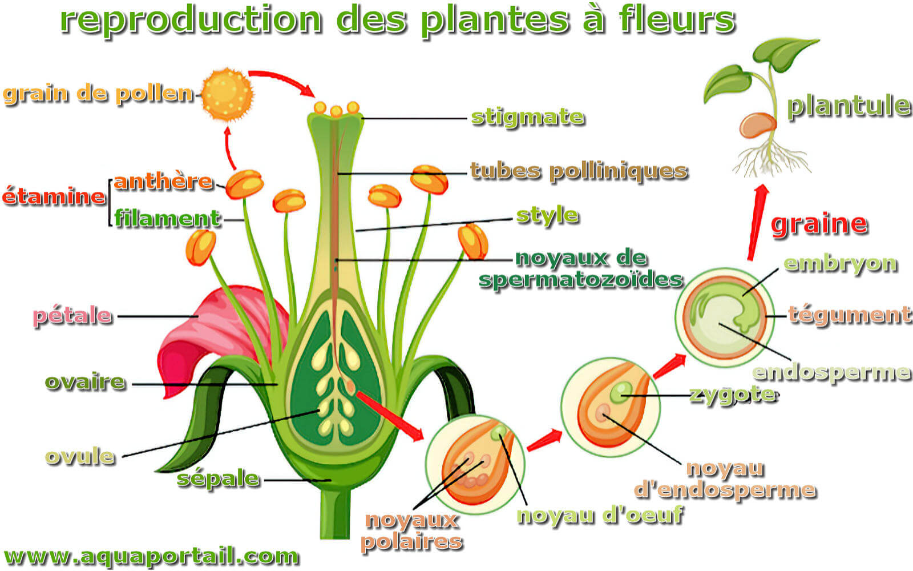
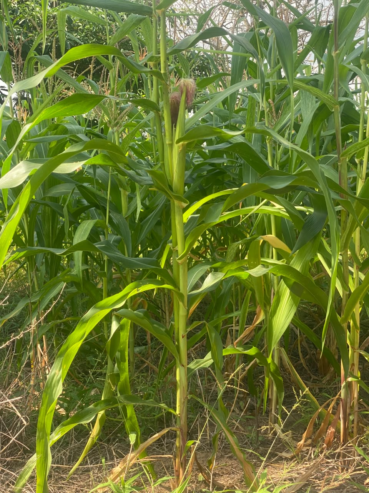

Graminées
>, environ 130 Ma ° Crétacé
Le problème que ce groupe a resolu
Protéger et disperser la graine : les plantes à fleurs(angiosperme) apportent la fleur, le fruit et la double fécondation.
Appareil végétatif

Sporophyte avec racines fasciculées. Le gamétophyte est microscopique.
Reproduction

Fleurs discrètes pollinisées par le vent. La graine est enfermée dans un fruit (le grain de riz ou de mais).
Observé sur le terrain
